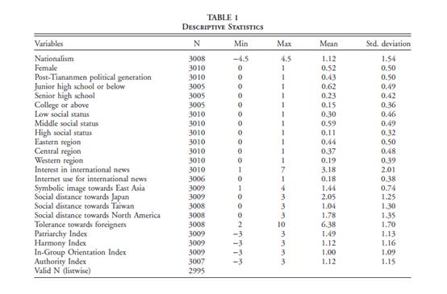
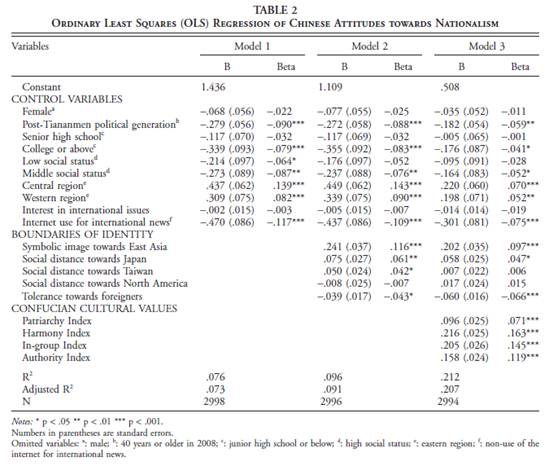

战狼的前半生——中国民族主义大起底
收录于合集
#政治态度 13 个
#比较政治学 121 个
#政治文化 8 个
文献来源： Yongshin K, Hwan K D, Seokho K. Who is Nationalist Now in China?: Some Findings from the 2008 East Asian Social Survey[J]. China An International Journal, 2016, 14.
作者介绍： Kim Yongshin，夏威夷大学马诺分校政治学系博士候选人，研究兴趣包括中国政治、东亚国际关系和社会科学研究方法；Kim Doo Hwan, 韩国德成女子大学社会学系助理教授，芝加哥大学社会学博士，研究兴趣包括社会资本与社会分层、教育与社会变迁等。Kim Seokho， 韩国首尔大学社会学系助理教授，芝加哥大学社会学博士，研究兴趣包括政治社会学、公民社会、社会网络、移民劳工和调查方法。
编者按： 在过去的一个月中，爱国题材电影《战狼2》砍下了50亿的票房成绩，在创造中国电影产业历史的同时也引发了新一轮的民族主义热潮。然而，究竟什么是民族主义？谁才是民族主义者？民族主义又从哪里来？官方、媒体和学者之间似乎对这些问题缺乏必要的共识，中文文献中也鲜有来自实证科学的证据。有趣的是，不仅中国学者纷纷争先恐后地加入这场争论，国外学者也对此表现出极大的热情与关切。今天，政文观止就带大家一起来看看国外学者是如何从实证角度定义、梳理和分析中国民族主义的。
理论回顾：
根据对史实和文献的回顾，作者强调，今天中国的民族主义与80年的思潮完全不同。在今天的民族主义者看来，过去的类似思潮只能称作极端的政治浪漫。具体而言，新旧民族主义主要有以下两点差异：
首先，民族主义的根基不同。无论何时何地，民族主义总是立足于“我们”与“他者”的界限。在毛时代，“我们”与“他者”的界限是阶级，因此彼时的民族主义孕育于阶级斗争和反传统。到了80年代，国家的界限开始显现，但改革开放又不断借鉴西方的技术与理念，此时民族主义的根基较为暧昧，浪漫的民族主义者和西方文化之间有着某种亲和性。而从90年代至今，中国的民族主义越来越依赖于国家的界限，尤其是中华文明与西方文明的区别，所谓的“中国性”（Chineseness）被不断重复和强调。
其次，民族主义的诉求不同。早先的民族主义渴望变革和进步，而今天的民族主义者则推崇秩序与传统。中国的“新左派”知识分子不再坚持毛时代的政治浪漫，而是诉诸国家工具主义并自视为国家秩序的理性捍卫者。
在前人的基础上，作者指出，今天中国的民族主义包含三个主要维度：经济态度、利益态度和文化态度。
数据概览：
实证检验部分的数据来自2008年东亚社会调查（EASS）中的全球化与文化模块。显然，本文的因变量就是受访者表现出的民族主义的强度。作者选取了问卷中的三个问题进行分析：1.中国应该限制进口来保护本国经济；2.哪怕挑起国际冲突，中国也应该保护自己的利益；3.外国电影、音乐和书籍的渗透会破坏我们的文化。对于这三个问题，受访者越倾向于同意则得分最高（-1.5~1.5），三项得分加总则为民族主义的强烈程度。
自变量则由以下几个部分组成：1.身份边界（包括对东亚的认同和对其他国家、地区的心理距离感）；2.儒家文化（包括父权、和谐、凝聚和位阶等测度）。
控制变量则包括社会人口学特征（性别、年龄、教育、地区等）和受访者对国际政治新闻的兴趣与关注。
相关变量的描述性统计如下：

分析结果：
下图为作者构建的多元回归模型：

模型1中只放入了控制变量，因变量（民族主义）被解释了7.6%。结果显示：性别和地位对民族主义而言没有显著影响；相比之下，年轻一代的民族主义显著变弱；教育水平的提高很可能会减弱民族主义；社会地位更高的群体更容易显现出民族主义；中西部地区的居民拥有最为强烈的民族主义。
模型2重点考察了身份边界的问题，解释程度略有上升。结果显示：对于亚洲的身份认同会显著地提升民族主义；对于日本的心理距离会强烈地提升民族主义，对台湾的心理距离次之；对外国人的容忍程度与民族主义呈现明显的负相关关系。
模型3又加入了儒家文化的因素，解释程度大幅上升。结果显示：对儒家文化各个方面的认同都会显著地提升民族主义。
结论：
通过理论分析和数据检验，作者判断：今天中国的民族主义确实与80年代存在很大不同，年轻一代的民族主义情绪总体上减弱了，但民族主义的根基却更加深厚而丰富了。本土儒家文化与当代民族主义的结合值得学者深入分析。
注：
为了方便读者阅读，小编对原文的篇章结构做了较大的删节和调整，需要深入研读和直接引用的读者请戳下方“阅读原文”。
**
**
推荐阅读：
-
Pan J, Xu Y. China’s Ideological Spectrum[J]. Social Science Electronic Publishing, 2015.
-
马立诚. 当代中国八种社会思潮[M]. 社会科学文献出版社, 2012.
-
马得勇. 国家认同、爱国主义与民族主义——国外近期实证研究综述[J]. 世界民族, 2012(3):8-16.
-
马得勇, 王丽娜. 中国网民的意识形态立场:左者恒左,右者恒右[J]. 文化纵横, 2015(6):14-14.
-
杨光斌, 杨洪晓. 民主主义、民族主义与现代国家建设[J]. 行政科学论坛, 2014,1(4):1-9.
-
赵丰. 民族主义需要理性引导与约束[J]. 人民论坛, 2017(1):28-30.
**
**